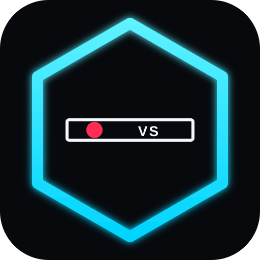

CORE LINE
00:00
No listings yet
Add a sports RSS feed
The three channel apps already publish the slate. Core Line is the reader — a crawl that says Team vs Team · ESPN, TSN4, SN 3.

The three channel apps already publish the slate. Core Line is the reader — a crawl that says Team vs Team · ESPN, TSN4, SN 3.